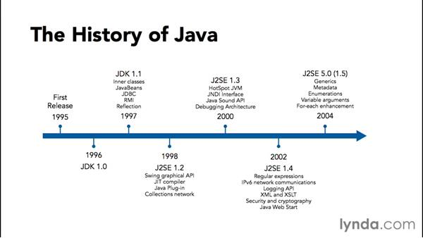

Java technology is used to develop applications for a wide range of environments, from consumer devices to heterogeneous enterprise systems. In this section, get a high-level view of the Java platform and its components.
James Gosling initiated Java language project in June 1991 for use in one of his many set-top box projects. The language, initially called ‘Oak’ after an oak tree that stood outside Gosling's office, also went by the name ‘Green’ and ended up later being renamed as Java, from a list of random words. Sun released the first public implementation as Java 1.0 in 1995. It promised Write Once, Run Anywhere (WORA), providing no-cost run-times on popular platforms. On 13 November, 2006, Sun released much of Java as free and open source software under the terms of the GNU General Public License (GPL). On 8 May, 2007, Sun finished the process, making all of Java's core code free and open-source, aside from a small portion of code to which Sun did not hold the copyright.
Like any programming language, the Java language has its own structure, syntax rules, and programming paradigm. The Java language's programming paradigm is based on the concept of OOP, which the language's features support. The Java language is a C-language derivative, so its syntax rules look much like C's. For example, code blocks are modularized into methods and delimited by braces ({ and }), and variables are declared before they are used. Structurally, the Java language starts with packages. A package is the Java language's namespace mechanism. Within packages are classes, and within classes are methods, variables, constants, and more. You learn about the parts of the Java language in this tutorial.
When you program for the Java platform, you write source code in .java files and then compile them. The compiler checks your code against the language's syntax rules, then writes out bytecode in .class files. Bytecode is a set of instructions targeted to run on a Java virtual machine (JVM). In adding this level of abstraction, the Java compiler differs from other language compilers, which write out instructions suitable for the CPU chipset the program will run on.
Java is:
1. Object Oriented − In Java, everything is an Object. Java can be easily extended since it is based on the Object model.
2. Platform Independent − Unlike many other programming languages including C and C++, when Java is compiled, it is not compiled into platform specific machine, rather into platform independent byte code. This byte code is distributed over the web and interpreted by the Virtual Machine (JVM) on whichever platform it is being run on.
3. Simple − Java is designed to be easy to learn. If you understand the basic concept of OOP Java, it would be easy to master.
4. Secure − With Java's secure feature it enables to develop virus-free, tamper-free systems. Authentication techniques are based on public-key encryption.
5. Architecture-neutral − Java compiler generates an architecture-neutral object file format, which makes the compiled code executable on many processors, with the presence of Java runtime system.
6. Portable − Being architecture-neutral and having no implementation dependent aspects of the specification makes Java portable. Compiler in Java is written in ANSI C with a clean portability boundary, which is a POSIX subset.
7. Robust − Java makes an effort to eliminate error prone situations by emphasizing mainly on compile time error checking and runtime checking.
8. Multithreaded − With Java's multithreaded feature it is possible to write programs that can perform many tasks simultaneously. This design feature allows the developers to construct interactive applications that can run smoothly.
9. Interpreted − Java byte code is translated on the fly to native machine instructions and is not stored anywhere. The development process is more rapid and analytical since the linking is an incremental and light-weight process.
10. High Performance − With the use of Just-In-Time compilers, Java enables high performance.
11. Distributed − Java is designed for the distributed environment of the internet.
12. Dynamic − Java is considered to be more dynamic than C or C++ since it is designed to adapt to an evolving environment. Java programs can carry extensive amount of run-time information that can be used to verify and resolve accesses to objects on run-time.